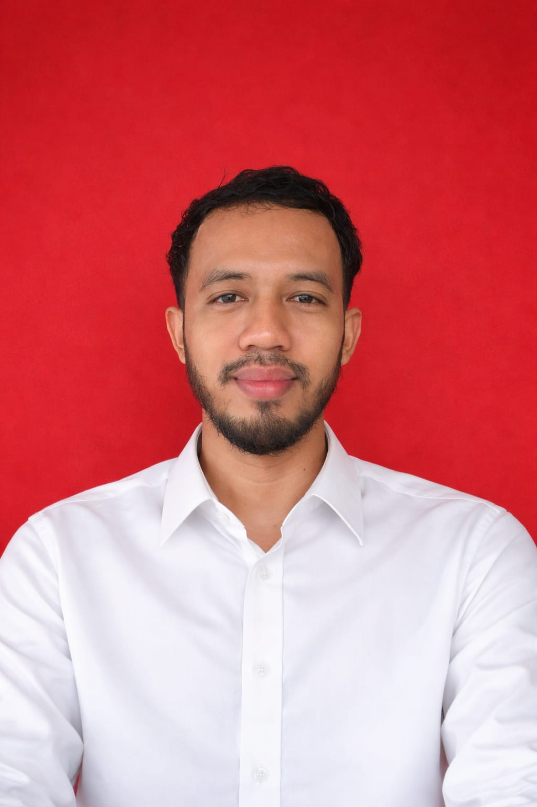
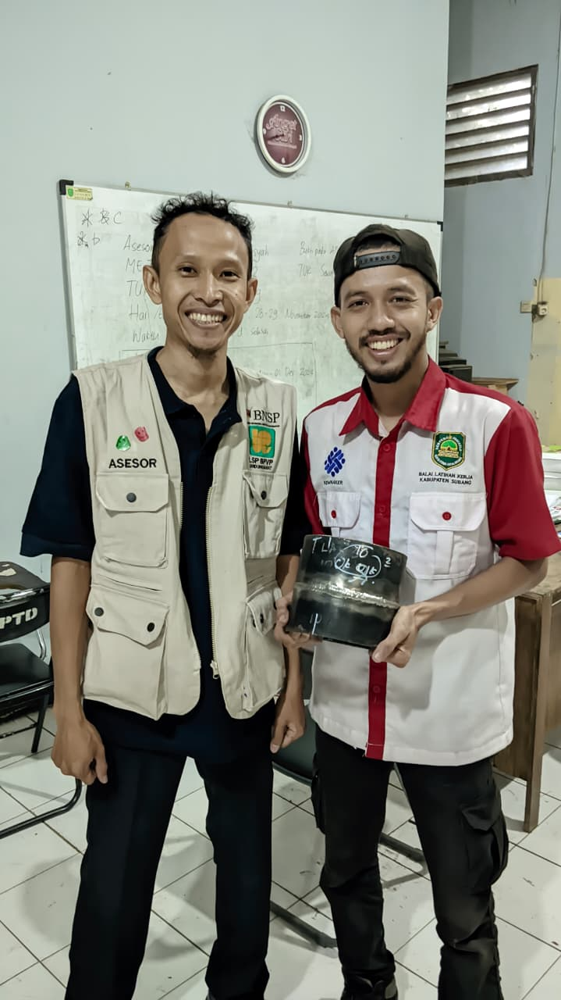
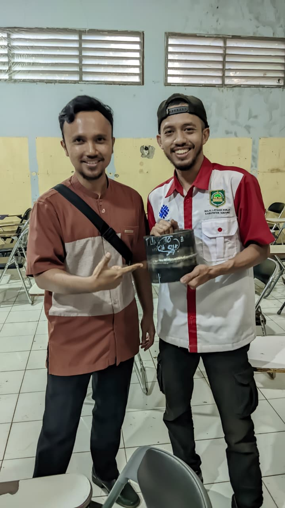

Saya adalah seorang Welder bersertifikat BNSP dengan pengalaman lebih dari 5 tahun di bidang pengelasan struktural dan pemipaan. Terbiasa mengerjakan pengelasan SMAW, GTAW, dan GMAW sesuai standar WPS. Teliti, disiplin, dan selalu mengutamakan K3 dalam bekerja.
Selain bekerja, saat ini saya juga aktif sebagai mahasiswa semester 1 Prodi Informatika di Universitas Siber Asia. Saya tertarik menggabungkan skill teknis di lapangan dengan kemampuan digital untuk masa depan. Siap belajar hal baru dan bekerja dalam tim.

Nama: Nanang Heri Permana
Jenis Kelamin: Laki-laki
Telepon: 0857-7819-5390
Email: nanangheri1933@gmail.com
Alamat: Sumedang, Indonesia
SMKN 1 BUAHDUA
Teknik Kendaraan Ringan
2012-2015
| Nama Sertifikat | Tahun |
|---|---|
| Sertifikat Welder BNSP | 2024 |
| SIO Forklift | 2019 |
| Nama Kursus | Tempat |
|---|---|
| Operator Forklift | BLK Sumedang, 2019 |
| Pipe Welder SMAW 6G | BLK Subang, 2024 |
Hasil Uji Kompetensi

